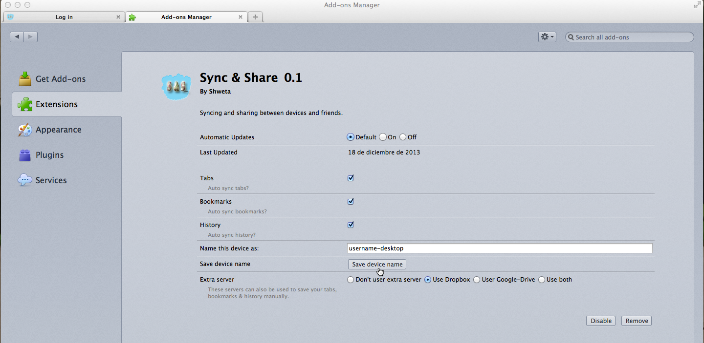

1.Settings:
-
1.1.How to go to preferences panel?
-
There are two ways to go to the preference panel:
From Sync & Share Menu
- Touch your device's menu button
- Touch Sync & Share Menu.
- Choose Options.
The add-ons manager tab will be opened. See it in this picture
- Click Extensions(if not opened automatically).
- Search Sync & Share among all the add-ons.
- Click on Preferences.
Picture 1.1. Tools > Sync & Share Menu > Settings Menu.From Add-ons Menu
- Touch your device's menu button
- Click Add-ons.
The add-ons manager tab will be opened.
- Click Extensions(if not opened automatically).
- Search Sync & Share among all the add-ons.
- Click on Preferences.
Picture 1.2. Tools > Add-ons manager.
1.2.Preferences
-
-
Auto sync: Tabs & Bookmarks & History.
-
Check these options to let the add-on auto sync your tabs, your bookmarks and your history. This means that all the open tabs in your browser will be sent to the server, so that you can view and reach them from another device or from any other places.
- Tabs: Everytime you open a new tab or close a tab, the add-on will update your browser's tabs situation.
- Bookmarks: Your other devices' bookmarks will be saved in this device, so that you can view or save them from this device.
- History: Your other devices' history will be saved in this device, so that you can view or save them from this device.
You can uncheck any of these options if you no longer want them to be synced automatically as explained above. You can save/sync the items independently as desired. Please see the Save Manually section.
-
-
Name this device as
-
Name the device you are using as you like. It is advisable to name each device differently so that you can recognize your items by your device name. Don't forget to press the Save device name button to save your changes!
-
-
-
Extra Server
-
You can also save your items manually in other servers: Dropbox & Google Drive. Choose the option you like most.
-
Picture 1.3. Preference panel. -